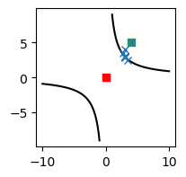
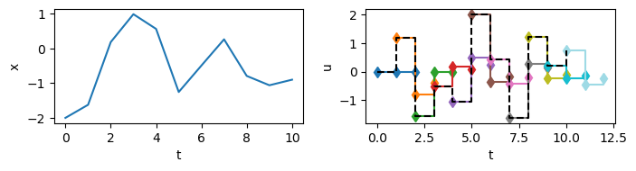

import numpy as np
import matplotlib.pyplot as plt
from pydrake.solvers import MathematicalProgram, IpoptSolver, SolveOptimization
Using
pydrake to setup optimization problems.
refs:
Mathematical program
Generic mathemaical program can be stated as \[ \boxed{ \begin{align} \min_x\ & f(x)\\ \text{s.t.}\ & x\in\mathcal{S} \end{align} } \] where \(f(x)\) is an objective function, \(x\in\mathbb{R}^n\) are decision variables and \(\mathcal{S}\subset\mathbb{R}^n\) is a constraint set.
pydrake supports multiple solvers for various categories of optimization problems. The MathematicalProgram class provides a common API to specify an optimization problem, e.g. objectives, constraints, and data structures, to avoid solver-specific codes (similar to YALMIP or JuMP in Julia).
Problems solvable by pydrake:
- Linear programming
- Quadratic programming
- Second-order cone programming
- Nonlinear nonconvex programming
- Semidefinite programming
- Sum-of-squares programming
- Mixed-integer programming (mixed-integer linear programming, mixed-integer quadratic programming, mixed-integer second-order cone programming).
- Linear complementarity problem
Minimal examples
# Set up the optimization problem
prog = MathematicalProgram()
# Decision variables
x = prog.NewContinuousVariables(2)
# Constraints
prog.AddConstraint(x[0] + x[1] == 1)
prog.AddConstraint(x[0] <= x[1])
# Objective function
prog.AddCost(x[0] **2 + x[1] ** 2)
# Solve
res = Solve(prog)(res.get_solver_id().name(),
res.is_success(),
res.get_solution_result(),
res.GetSolution(x),
res.get_optimal_cost())('Clarabel',
True,
<SolutionResult.kSolutionFound: 0>,
array([0.4999745, 0.5000255]),
0.5000000013010027)pydrake will automatically chooses a solver for us, for more info see here. Also, note that in the example above we do not specify the initial guess, by default it is set to zeros. We can pick a solver and suggest an initial guess as shown below.
# Use IPOPT solver
solver = IpoptSolver()
# Suggest an initial guess
res = solver.Solve(prog, np.array([1, 1]))
(res.get_solver_id().name(),
res.is_success(),
res.get_solution_result(),
res.GetSolution(x),
res.get_optimal_cost())('IPOPT',
True,
<SolutionResult.kSolutionFound: 0>,
array([0.4999965, 0.5000035]),
0.5000000000245315)
Callback
Sometimes, it is usefull to see the intermediate values of the decision variables. We can use .AddVisualizationCallback to visualize/store/check those values.
fig, ax = plt.subplots(figsize=(2,2))
curve_x = np.linspace(1, 10, 100)
ax.plot(curve_x, 9./curve_x, 'k')
ax.plot(-curve_x, -9./curve_x, 'k')
ax.plot(0, 0, 'rs')
x0 = [4., 5.]
ax.plot(*x0, 'C2s')
def update(x):
ax.plot(x[0], x[1], 'C0x')
# Find the closest point on a curve to the origin
prog = MathematicalProgram()
x = prog.NewContinuousVariables(2)
prog.AddConstraint(x[0] * x[1] == 9)
prog.AddCost(x[0]**2 + x[1]**2)
prog.AddVisualizationCallback(update, x)
res = Solve(prog, x0)
(res.GetSolution(), res.get_optimal_cost()) # analytical best at (3,3) or (-3,-3)
Double integrator MPC
# Double integrator
# xddot = u
def _dyn(x, u):
return np.array([x[1], u])
# Forward Euler
def integrate(x, u, dt, t):
_t = 0
_x = x.copy()
while _t < t:
dx = _dyn(x, u)
_x = _x + dx * dt
_t += dt
return _x
def apply_ctrls(x, u, dt=0.01):
xs = [x.copy()]
for ui in u:
xs.append(integrate(xs[-1], ui, dt, 1.))
return np.array(xs)
def cost_fn(u):
xs = apply_ctrls(X, u)
return (xs**2).sum()def mpc_one_step(u0, noise, solver):
global X,U
if solver is not None:
res = solver.Solve(prog, u0)
if res.get_solver_details().status != 0: return None
else:
res = Solve(prog, u0, None)
if not res.is_success(): return None
U = res.GetSolution()
X = integrate(X, U[0], 0.01, 1.)
if noise is not None: X = X + np.random.randn(1) * noise
return X.copy(), U.copy()
def mpc(n_step=10, noise=None, solver=None):
global X,U
xs,us = [X.copy()],[U.copy()]
for step in range(n_step):
res = mpc_one_step(U, noise, solver)
if res is None: print(f'Solver fails, stops at {step}.'); break
xs.append(res[0])
us.append(res[1])
return xs,usglobal X,U
X = np.array([-2,0.]) # initial (pos, velo)
U = np.zeros((n_horizen:=3)) # horizion
prog = MathematicalProgram()
u = prog.NewContinuousVariables(n_horizen, 'u')
prog.AddBoundingBoxConstraint(-5,5,u)
prog.AddCost(cost_fn, u)
# Do MPC for `n_step` steps,
# noise in observations, not in model
trajs = mpc((n_step:=10), solver=IpoptSolver(), noise=0.5)